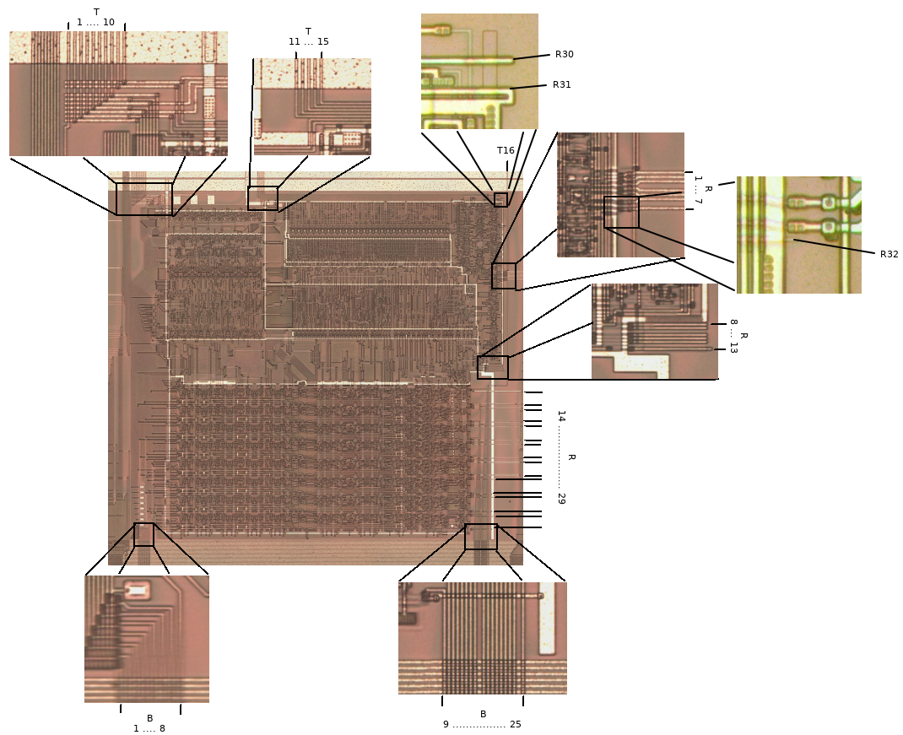

This work is licensed under a Creative Commons Attribution-ShareAlike 4.0 International License.
This is a list of all connections to/from the SM83 CPU core as seen in the Gameboy DMG-CPU-B die shot. It builds on the work of Furrtek, the information found in his DMG-CPU-Inside repository.
Please report any errors I made here.

| I/O | Wire | Cell | Description | |
|---|---|---|---|---|
| T1 | O | FROM_CPU6 | LEXY.in | The output of the inverter LEXY ends at an output pad at the bottom of the die, which is not bonded. |
| T2 | I | TO_CPU | BOWA.q | A gated 1 MiHz clock. The CPU can stop this clock by driving T11 or T14 low. This is the inverse of T3. |
| T3 | I | unlabeled | BEDO.q | A gated 1 MiHz clock. The CPU can stop this clock by driving T11 or T14 low. This is the inverse of T2. |
| T4 | I | unlabeled | BEKO.q, BAVY.q | A gated 1 MiHz clock. The CPU can stop this clock by driving T11 low. This is the inverse of T5. |
| T5 | I | PHI_OUT | BUDE.q, BEVA.q | A gated 1 MiHz clock. This is the same clock that comes out of the PHI pin of the chip. The CPU can stop this clock by driving T11 low. This is the inverse of T4. |
| T6 | I | unlabeled | BOLO.q, BYDA.q | A gated 1 MiHz clock. The CPU can stop this clock by driving T11 low. This is the inverse of T7. |
| T7 | I | FROM_CPU5 | BUFA.q, BYLY.q | A gated 1 MiHz clock. The CPU can stop this clock by driving T11 low. This is the inverse of T6. |
| T8 | I | unlabeled | BUKE.q | A gated 1 MiHz clock. The CPU can stop this clock by driving T11 low. |
| T9 | I | unlabeled | BOMA.q | A gated 1 MiHz clock. The CPU can stop this clock by driving T14 low. This is the inverse of T10. |
| T10 | I | BOGA1MHZ | BOGA.q | A gated 1 MiHz clock. The CPU can stop this clock by driving T14 low. This is the inverse of T9. |
| T11 | O | CLK_FROM_CPU | ABOL.in, TUBO.in1 | CPU can drive this low to disable most of the clocks fed to itself. T9 and T10 are the only clocks that are not turned off when this signal gets driven low. However, T9 and T10 might have slightly shorter "shorter" phases while this signal is high. By "shorter" phases I mean, they are not symetric and have a shorter and a longer phase (and the shorter one gets even shorter). This is because of BUTO mixing them with the other clocks when they're active. Maybe they did this to guarantee a specific synchronicity between T9/T10 and the other clocks that tick at around the same time as T9/T10. |
| T12 | I | unlabeled | AFER.q | Active-low synchronous reset input. Synchronized to T9/T10. |
| T13 | I | RESET | RST (ext. pad) | Active-high asynchronous reset input. Fed directly from RST input pad. |
| T14 | O | CLKIN_A | multiple | Crystal oscillator enable. When CPU drives this low, the crystal oscillator gets disabled to save power. This happens during STOP mode. |
| T15 | I | unlabeled | TABA.q | ? |
| T16 | I | unlabeled | (ext. pad) | Directly connected to an input pad at the top of the die, which is not bonded. |
| R1 | O | CPU_RAW_RD | multiple | Active-high memory RD signal from CPU. |
| R2 | O | FROM_CPU3 | multiple | Active-high memory WR signal from CPU. |
| R3 | I | T1T2 | UNOR.q | Maybe used to disable all bus drivers in the CPU when test mode is active. |
| R4 | I | unlabeled | SYRO.q | High when address bus is 0xfexx or 0xffxx. |
| R5 | I | unlabeled | TUTU.q | High when address bus is 0x00xx and boot ROM is still visible (*0xff50 == 0x00). |
| R6 | I | T1T2 | UMUT.q | Maybe used to disable all bus drivers in the CPU when test mode is active. |
| R7 | O | FROM_CPU4 | TEXO.in1, AGUT.in3 | ? |
| R8 | ? | - | - | Not connected. |
| R9 | ? | - | - | Not connected. |
| R10 | ? | - | - | Not connected. |
| R11 | ? | - | - | Not connected. |
| R12 | ? | - | - | Not connected. |
| R13 | ? | - | - | Not connected. |
| R14 | O | CPU_IRQ0_ACK | LETY.in | Active-high. Acknowledges IRQ0 (V-Blank). |
| R15 | I | CPU_IRQ0_TRIG | LOPE.q | Active-high. Triggers IRQ0 (V-Blank). |
| R16 | O | CPU_IRQ1_ACK | LEJA.in | Active-high. Acknowledges IRQ1 (Status). |
| R17 | I | CPU_IRQ1_TRIG | LALU.q | Active-high. Triggers IRQ1 (Status). |
| R18 | O | CPU_IRQ2_ACK | LESA.in | Active-high. Acknowledges IRQ2 (Timer). |
| R19 | I | CPU_IRQ2_TRIG | NYBO.q | Active-high. Triggers IRQ2 (Timer). |
| R20 | O | CPU_IRQ3_ACK | LUFE.in | Active-high. Acknowledges IRQ3 (Serial). |
| R21 | I | CPU_IRQ3_TRIG | UBUL.q | Active-high. Triggers IRQ3 (Serial). |
| R22 | O | CPU_IRQ4_ACK | LAMO.in | Active-high. Acknowledges IRQ4 (Joypad). |
| R23 | I | CPU_IRQ4_TRIG | ULAK.q | Active-high. Triggers IRQ4 (Joypad). |
| R24 | O | CPU_IRQ5_ACK | - | Active-high. Acknowledges IRQ5. Not connected. |
| R25 | I | CPU_IRQ5_TRIG | GND | Active-high. Triggers IRQ5. Hardwired to GND. |
| R26 | O | CPU_IRQ6_ACK | - | Active-high. Acknowledges IRQ6. Not connected. |
| R27 | I | CPU_IRQ6_TRIG | GND | Active-high. Triggers IRQ6. Hardwired to GND. |
| R28 | O | CPU_IRQ7_ACK | - | Active-high. Acknowledges IRQ7. Not connected. |
| R29 | I | CPU_IRQ7_TRIG | GND | Active-high. Triggers IRQ7. Hardwired to GND. |
| B1 | I/O | D0 | multiple | Data bus D0. |
| B2 | I/O | D1 | multiple | Data bus D1. |
| B3 | I/O | D2 | multiple | Data bus D2. |
| B4 | I/O | D3 | multiple | Data bus D3. |
| B5 | I/O | D4 | multiple | Data bus D4. |
| B6 | I/O | D5 | multiple | Data bus D5. |
| B7 | I/O | D6 | multiple | Data bus D6. |
| B8 | I/O | D7 | multiple | Data bus D7. |
| B9 | O | A15 | multiple | Address bus A15. |
| B10 | O | A14 | multiple | Address bus A14. |
| B11 | O | A13 | multiple | Address bus A13. |
| B12 | O | A12 | multiple | Address bus A12. |
| B13 | O | A11 | multiple | Address bus A11. |
| B14 | O | A10 | multiple | Address bus A10. |
| B15 | O | A9 | multiple | Address bus A9. |
| B16 | O | A8 | multiple | Address bus A8. |
| B17 | O | A7 | multiple | Address bus A7. |
| B18 | O | A6 | multiple | Address bus A6. |
| B19 | O | A5 | multiple | Address bus A5. |
| B20 | O | A4 | multiple | Address bus A4. |
| B21 | O | A3 | multiple | Address bus A3. |
| B22 | O | A2 | multiple | Address bus A2. |
| B23 | O | A1 | multiple | Address bus A1. |
| B24 | O | A0 | multiple | Address bus A0. |
| B25 | I | TO_CPU2 | AWOB.q | Wakes CPU from STOP mode. |
This work is licensed under a Creative Commons Attribution-ShareAlike 4.0 International License.